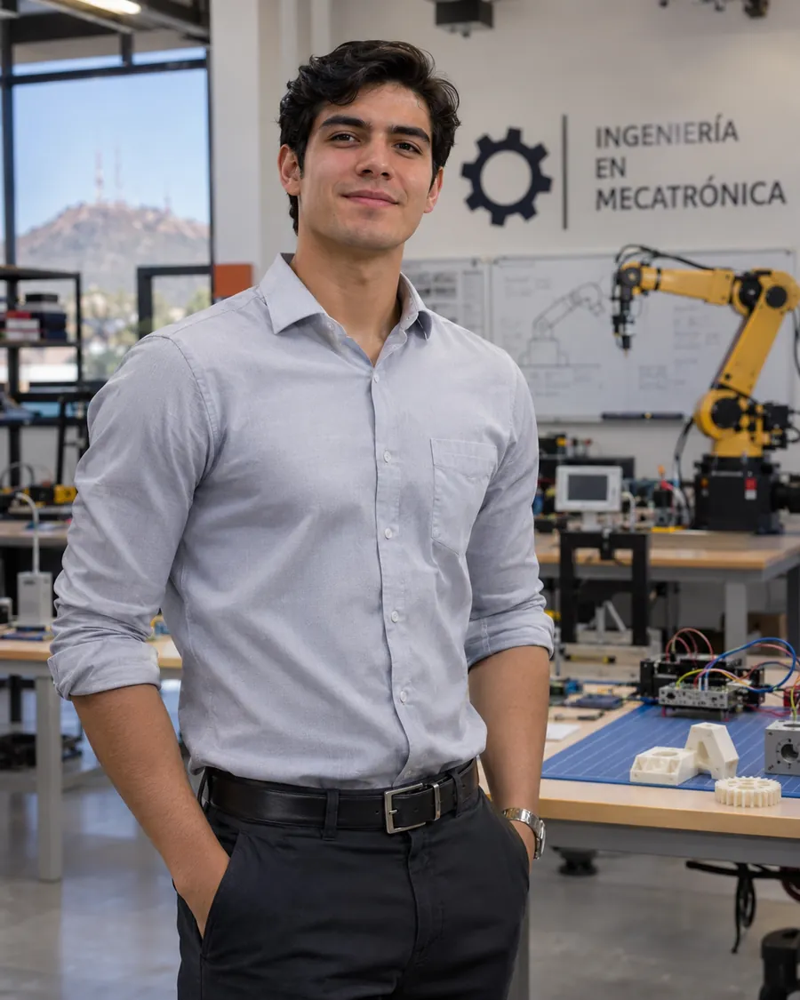
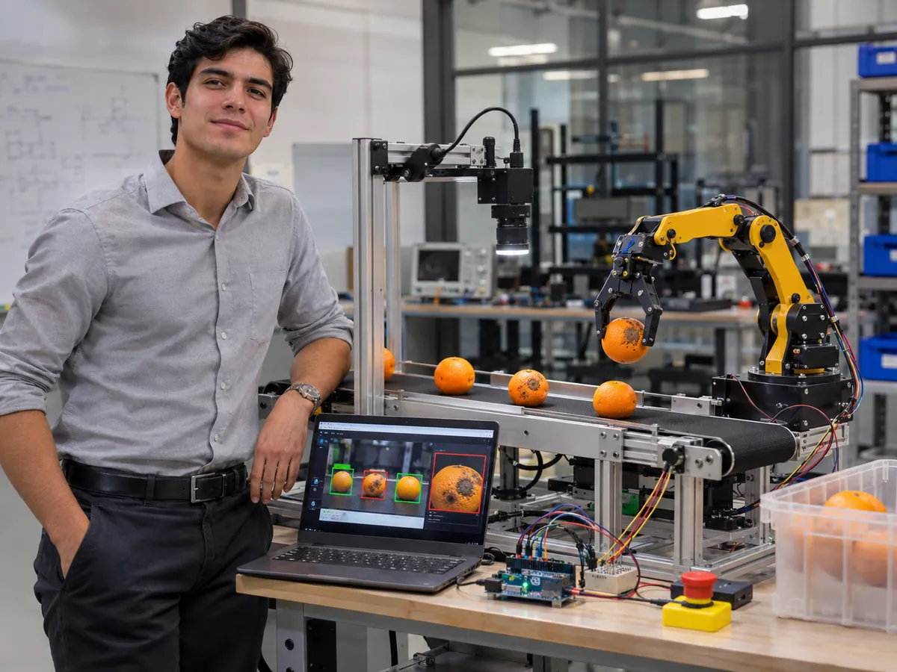

Lo que descubrí al construir una clasificadora de naranjas
Conectar cámara, Python y movimiento es más difícil de lo que parece.
Leer artículoDisponible para prácticas profesionales 2027
Soy Mateo Duarte, estudiante de Ingeniería Mecatrónica en Hermosillo. Trabajo con visión por computadora, sensores y automatización para resolver procesos reales.

Proyecto actual CitrusVision →Sobre mí
Me interesa convertir ideas en sistemas físicos: una cámara que interpreta su entorno, un mecanismo que responde a datos o una línea de producción que inspecciona mejor.
En la carrera descubrí mi interés por la visión artificial, los sistemas embebidos y la automatización industrial. Quiero aprender junto a equipos de ingeniería que trabajan en manufactura avanzada.
Prefiero mostrar lo que estoy construyendo, lo que sé explicar y lo que aún necesito aprender.
Rumbo
Enfocar mi formación en automatización y calidad para la manufactura de Sonora, combinando visión artificial con control de procesos.
La manufactura pesa 1.18 veces más en el empleo de Sonora que en el de México (INEGI, Censos Económicos, 2023).
Revisé solo 13 vacantes de Hermosillo: ninguna publica 0 años de experiencia. Necesito prácticas y proyectos que cuenten como experiencia.
Medir CitrusVision con imágenes reales y conversar con dos ingenieros de calidad en Hermosillo.
Proyectos

Inspección visual de naranjas y separación robótica con cámara, Python, OpenCV, Arduino y una garra de prototipo.
Adquisición de datos, comunicación serial y control de dispositivos.
Procesamiento de imágenes, scripts y análisis reproducible.
Modelado CAD, piezas impresas en 3D y prototipado físico.
Blog
Currículum
Ingeniería Mecatrónica · Hermosillo, Sonora · mateo.duarte@example.com
Estudiante de Ingeniería Mecatrónica, egreso en 2027. Interés en visión artificial, Arduino y automatización industrial. Busco prácticas profesionales para aplicar y ampliar lo que sé.
CitrusVision · 2026, en desarrollo
Inspección visual de naranjas con cámara, Python/OpenCV, Arduino y mecanismo de separación robótica.
Primer lugar, Olimpiada de Matemáticas de Sonora · 2022
Español nativo · Inglés en desarrollo
Prácticas 2027 en robótica, automatización, calidad, manufactura o visión artificial.